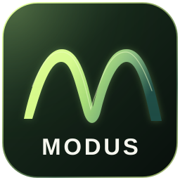

The current music tools and articles are free to use.
02
Hear what you learn.
Planned member content connects explanation, sound and practical exercises.
03
Choose your rhythm.
Monthly or annual. Prices and renewal terms will be clear before you buy.
YOUR MEMBERSHIP
Simple payment. Everything in one place.
We are preparing Stripe payments and a customer portal for receipts, payment methods, and cancellation. MODUS Dormancy is planned to automatically stop the next renewal after 30 days without activity, so you do not keep paying for an unused membership.
No payment details are collected on this page at present.

PRELIMINARY APP CONCEPT
MODUS ON PHONES AND TABLETS
MODUS, also as an app. A new way to explore music.
We're planning a dedicated MODUS app for phones and tablets, making learning, music theory and interactive tools easier to take wherever you go.
In development · More information coming in 2027.
The app is in the planning stage. Features, availability and any release date have not yet been determined.
BEFORE YOU CHOOSE
A little more to know.
Can I buy a membership now?+
Not yet. Prices and content are proposals. Payments will open once content, member access and payment processing are ready.
What happens to what is free today?+
Current backing tracks, the chord workshop, theory room, articles and Dorian learning path remain open. Paid memberships are planned as an addition with new content.
Who qualifies for MODUS+ student pricing?+
MODUS Elev is planned for enrolled students and school pupils who can verify enrollment. Exact eligibility rules, including age and institution types, will be set before launch. MODUS does not award academic credit or accredited qualifications.
How do I verify my student status?+
We are evaluating a verification provider or Feide where supported. Selecting a school or supplying a school email address alone is insufficient. Verification and any renewal requirements will be available only when the program launches.
How does annual billing work?+
The full annual price is charged at once: NOK 390 for Elev, NOK 790 for Modus+, or NOK 1,290 for Studio. This equals ten monthly payments, saving NOK 78, NOK 158, or NOK 258 compared with twelve monthly payments.
What happens if I do not use MODUS for 30 days?+
We are planning MODUS Dormancy: After 30 days without active use while signed in, automatic renewal stops, so you will not be charged for another period. You keep access through any period you have already paid for. This will apply to monthly and annual plans. The feature is still in development and is not active yet.
Can I reactivate my membership?+
Yes. If your paid period has not expired, you can regain access at no extra charge. After expiry, you can start a new period with a new purchase that you explicitly approve. Merely signing in will never trigger a charge. Automatic renewal will not restart without your approval.
Can I cancel my subscription?+
Yes, at any time. Cancellation will immediately stop future automatic renewal. You keep access until the end of your already paid period. Any statutory withdrawal rights remain unaffected. The customer portal and final terms will be ready before sales begin.
Are my practice notes linked to an account?+
For now, notes, practice progress and progressions are saved only in the same browser. Member accounts and syncing across devices are not enabled.